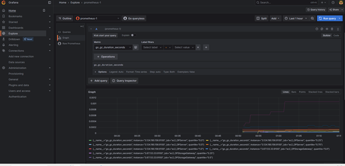
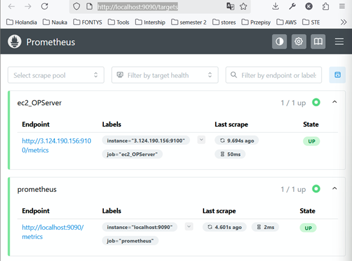
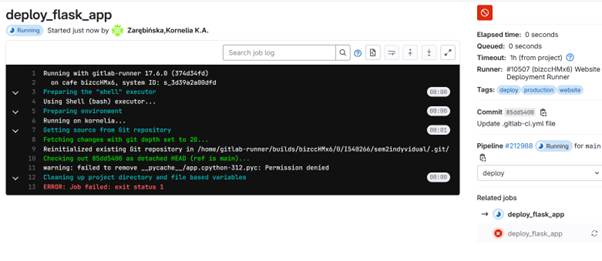
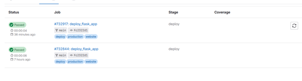
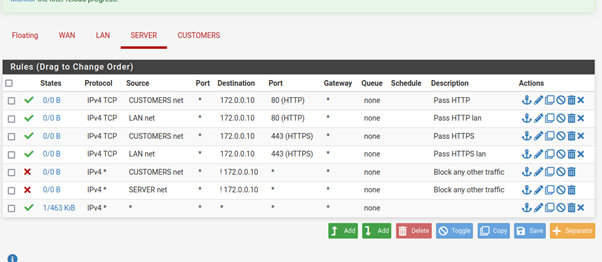
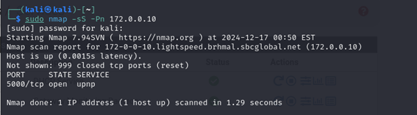
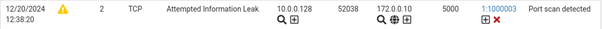
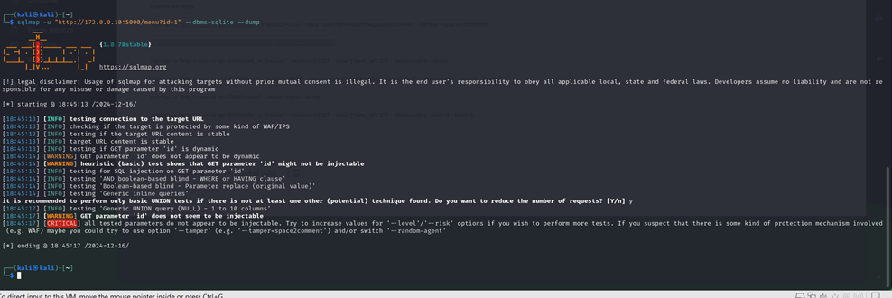
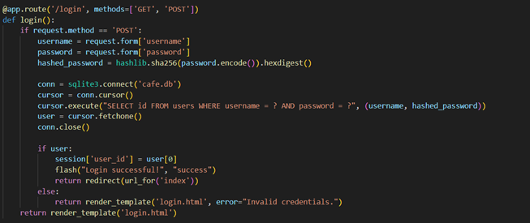

I am an ICT student in semester 4, focusing on network infrastructure and
fascinated by cybersecurity. This semester I am doing academic preparation
to gain more theoretical knowledge about computers, and later pursue a master’s
degree in research science.
During summer I gained the ISC2 CC certificate, and now I am preparing for CompTia Security+ in October.
I am looking for an internship which will take place next semester.
This portfolio showcases my studies and projects.
Goal: Create a cloud-based file sharing system, similar to Dropbox, using AWS services. Focus was on security, scalability, and keeping costs under control.
My Role: I was responsible for planning the network and making diagrams, writing half of the Lambda functions in Python, setting up system monitoring with Grafana/Prometheus, and doing cost analysis. I worked in a group of 3 other students, using agile (daily scrums, Jira, rotating scrum master role).
How it works: Users log in through Cognito → API Gateway → Lambda → S3/DynamoDB. Route 53 and ACM are used for secure access. DynamoDB stores quotas and metadata, while S3 holds the files with pre-signed URLs. Everything is serverless for better scalability.
Diagrams: I made 3 versions before the final one. At first, I included a VPN tunnel between on-premises database and the cloud, plus Elastic Load Balancer, 2 regions with instances for high availability. Later, as a team, we decided to challenge ourselves and switch to fully serverless — that became our final design.
Lambdas: I built and tested functions for user quotas, upload links, and usage stats.
Main ones I worked on:
update-org-quota – recalculates total usage for all users.
One issue I found: even if a user was authenticated by Cognito, they didn’t always appear in our DB. I suggested a workaround Lambda that checks this during the first download request and adds the user if missing.
Lambda Function: K-ASSIGNUSERQUOTA
This Lambda handles manual storage quota assignments when an admin sets a quota
through the UI or backend API. It validates input, checks org-level limits, updates
Cognito and DynamoDB, and initializes a personal storage folder in S3.
import json
import boto3
from boto3.dynamodb.conditions import Attr
dynamodb = boto3.resource('dynamodb')
cognito = boto3.client('cognito-idp')
USER_POOL_ID = 'eu-central-1_IEHwWyoEo'
USER_TABLE = dynamodb.Table('K-UserQuotaTable')
ORG_TABLE = dynamodb.Table('K-OrgQuotaTable')
# cors added by Paul
cors_headers = {
"Access-Control-Allow-Origin": "*"
}
def lambda_handler(event, context):
try:
body = event.get('body', '{}')
if isinstance(body, str):
body = json.loads(body)
print("Parsed body:", body)
email = body.get('UserID')
org_id = body.get('OrgID')
quota_gb = int(body.get('QuotaGB') or 10)
if not email or not org_id or quota_gb <= 0:
return {
'statusCode': 400,
'headers': cors_headers,
'body': json.dumps({'message': 'Missing or invalid input'})
}
quota_bytes = quota_gb * pow(1024, 3)
org_record = ORG_TABLE.get_item(Key={'OrgID': org_id})
if 'Item' not in org_record:
return {
'statusCode': 404,
'headers': cors_headers,
'body': json.dumps({'message': 'Organization not found'})
}
org_max = org_record['Item']['MaxStorage']
response = USER_TABLE.scan(
FilterExpression=Attr('OrgID').eq(org_id)
)
existing_allocated = sum(u.get('QuotaAllocated', 0) for u in response['Items'])
if existing_allocated + quota_bytes > org_max:
return {
'statusCode': 403,
'headers': cors_headers,
'body': json.dumps({'message': 'Quota exceeds organization limit'})
}
user_info = cognito.admin_get_user(
UserPoolId=USER_POOL_ID,
Username=email
)
sub = user_info['sub']
cognito.admin_update_user_attributes(
UserPoolId=USER_POOL_ID,
Username=email,
UserAttributes=[
{
'Name': 'custom:StorageQuota',
'Value': str(quota_gb)
}
]
)
USER_TABLE.put_item(Item={
'UserID': sub,
'OrgID': org_id,
'QuotaUsed': 0,
'QuotaAllocated': quota_bytes,
'UserName': email
})
s3 = boto3.client('s3')
bucket_name = 'org-dropbox-storage'
user_path = f"{org_id}/{email}/"
s3.put_object(Bucket=bucket_name, Key=f"{user_path}.keep")
return {
'statusCode': 200,
'headers': cors_headers,
'body': json.dumps({'message': 'Quota assigned successfully'})
}
except Exception as e:
print("ERROR:", str(e))
return {
'statusCode': 500,
'headers': cors_headers,
'body': json.dumps({'message': 'Internal error', 'error': str(e)})
}
Explanation:
This Lambda assigns storage quotas to users:
Validates input (UserID, OrgID, QuotaGB).
Checks if new quota would exceed the org’s MaxStorage.
Updates DynamoDB (K-UserQuotaTable) and Cognito attributes.
Creates a personal storage folder in S3.
On-prem simulation: I created a separate VPC with EC2 + EBS volume to simulate company storage. Added NGINX dashboard with CRUD, put it behind CloudFront + ACM SSL cert for secure domain access. This way we had both S3 cloud storage and on-prem storage integrated.
System monitoring: I installed Prometheus + node exporter on EC2, then visualized metrics in Grafana. This gave us dashboards for CPU, RAM, disk, network etc. Running locally on Docker I could scrape EC2 metrics and display them live.


Outcome: We delivered a working file sharing system with quota control, secure authentication, monitoring, and cost optimization. It was also a good team experience with agile workflow.
What I learned: how to design serverless cloud systems, write and connect multiple Lambda functions, balance performance with costs, and the importance of good diagrams + documentation for teamwork.
Fonteyn Park Hybrid Infrastructure
Goal: Together with my team, we were asked to design and modernize the IT infrastructure for Fonteyn Holiday Parks.
The company had grown a lot but their systems were chaotic and decentralized.
Our task was to redesign the network, migrate to the cloud, and make everything easier to manage, secure, and scalable.
My Role: I was mostly responsible for setting up and configuring Linux servers, deploying websites (Apache + Nginx),
handling IP addressing, and helping with the Azure migration. I also prepared research on VLANs and tested them in Packet Tracer,
and I worked on presentations for the stakeholder to explain our migration plan and options.
Technologies: Azure, VMware, Linux (Apache, Nginx), VLANs, OPNsense, Git, Scrum/Agile.
How it works: The project sets up a cloud-based IT infrastructure for Fonteyn Holiday Parks in Microsoft Azure. It uses a secure network with a firewall (OPNsense) to separate trusted and untrusted zones. A Linux web server hosts the company’s website (built with Flask, nginx, and HTTPS), while a separate database server manages employee accounts, bookings, and income data.
How we worked:
We followed Agile with Scrum boards, sprint planning, and retrospectives. At first, our communication wasn’t great,
but we introduced fixed stand-ups, Discord updates, and even a “yellow card rule” for accountability.
Later sprints went much smoother, and we started to present in a way that was more customer-friendly instead of too technical.
What we built:
Migrated services to Microsoft Azure with backups and monitoring to improve reliability.
Configured Linux servers with Apache and Nginx for websites and apps.
Researched and tested VLAN segmentation to separate traffic and improve security.
Explored hybrid solutions with Azure + VMware and firewalls like OPNsense.
Prepared stakeholder presentations with migration plans, cost analysis, and monitoring strategies.
Outcome: We delivered a working migration plan and prototypes for a more reliable and scalable system.
The infrastructure was designed to remove unnecessary services, improve security, and centralize management.
What I learned:
- How to apply VLANs and Azure migration in practice.
- That communication in teams is just as important as the tech side.
- How to adapt presentations depending on the audience (technical vs. stakeholder).
Find the project here
Café Network & Security Project
Goal: Build a secure and simple IT setup for a café.
Customers should have their own Wi-Fi, employees a safe subnet, and a small server running an ordering web app.
The idea was to improve customer service, reduce cashier load, and separate public and private systems.
My Role: I worked individually on the whole setup: planning network design, building the infrastructure in VMware, creating the ordering app in Python (Flask + SQLite3), configuring firewall + IDS rules, and testing with security tools (SQLmap, Hydra, Nmap).
Flask-based ordering system with SQLite3 (user login, hashed passwords, orders, join table for order items).
Demo Video
CI/CD with GitLab – every push deployed new version of the app automatically.


Firewall rules in pfSense to allow only needed traffic

Suricata IDS to detect unusual traffic or brute force attempts.


SQL injection attempt by using sqlmap. Prevent by using variables in code.


Testing:
Brute force: Hydra to test weak credentials → fixed with rate limiting (max 5 tries per IP).
SQL injection: SQLmap → fixed by using parameterized queries.
Port scans: Nmap → Suricata triggered alerts correctly.
Outcome: Delivered a working café network prototype where customers could place orders via the app while employees stayed in a safe subnet.
The system had IDS rules, VPN access, and firewall protection to block attacks.
CI/CD made updating smooth, and tests showed it could resist SQL injection, brute force, and scanning attempts.